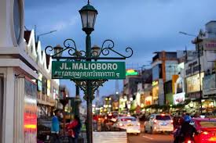

Jogja (Yogyakarta) is an incredible place because it blends history, culture, and a vibrant, laid-back atmosphere in a way that few cities can. Whether you're drawn to its rich heritage—like the awe-inspiring temples of Borobudur and Prambanan—or the creative energy of its art scene and street food culture, Jogja has something for everyone. The people are warm and welcoming, the cost of living is affordable, and there's always something new to explore, from hidden beaches to traditional markets. Its a city that feels alive yet peaceful, making it an amazing place to visit or even call home.
